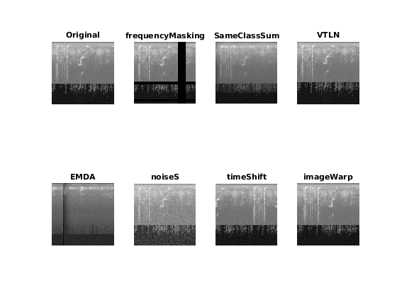

Showing augmentation techniques for audio signals
This script plots examples of the augmentation results computed by the testAugmentation.m script
Contents
- Load original spectrograms for comparison with the augmented ones
- Load the augmented datasets created and saved by testAugmentation.m
- Chose an image (1-6) for which the augmented spectrograms will be shown
- Plots the spectrograms from the augmented audio signals
- Plot the augmented spectrograms co,mputed from the original spectrograms obtained from the original audio signals
Load original spectrograms for comparison with the augmented ones
load('inputAugmentationFromSpectrograms.mat', 'spectrogramsOrigFromAudio')
Load the augmented datasets created and saved by testAugmentation.m
- ./examples/AugmentedImages/AugmentedFromAudio.mat contains the spectrograms created from the augmentation of the raw audio signals included in the test dataset ./examples/SmallInputDatasets/inputAugmentationFromAudio.mat (original mp3 files in ./examples/OriginalAudioFiles/)
- ./examples/AugmentedImages/AugmentedFromImages.mat contains the spectrograms created by augmentation of the original spectrograms included in ./examples/SmallInputDatasets/inputAugmentationFromSpectrograms.mat
load AugmentedFromAudio load AugmentedFromImages
Chose an image (1-6) for which the augmented spectrograms will be shown
imageToAugment = 1;
if imageToAugment>0 && imageToAugment<=6
Plots the spectrograms from the augmented audio signals
figure(imageToAugment*100), subplot(3,4,1), imshow(spectrogramsOrigFromAudio{imageToAugment},[]), title('Original')
augmLabelsFromAudio = {'wowResampling' 'noise' 'clipping' 'speedUp' 'harmonicDistortion' 'gain' 'randTimeShift' 'soundMix' 'dynamicRange' 'pitchShift' 'lowpassFilter'};
for j = 1:11
figure(imageToAugment*100), subplot(3,4,j+1), imshow(ImNFromAudio{j}{imageToAugment},[]), title(augmLabelsFromAudio{j})
end
Plot the augmented spectrograms co,mputed from the original spectrograms obtained from the original audio signals
figure(imageToAugment*100+1), subplot(2,4,1), imshow(spectrogramsOrigFromAudio{imageToAugment},[]), title('Original')
augmLabelsFromImage = {'frequencyMasking', 'SameClassSum', 'VTLN', 'EMDA', 'noiseS', 'timeShift', 'imageWarp'};
for j = 1:7 %augmentation techniques
if mod(imageToAugment,2)==0 && (j==2 || j==4)
figure(imageToAugment*100+1), subplot(2,4,j+1), imshow(ImNFromImage{j}{imageToAugment-1},[]), title(augmLabelsFromImage{j})
else
figure(imageToAugment*100+1), subplot(2,4,j+1), imshow(ImNFromImage{j}{imageToAugment},[]), title(augmLabelsFromImage{j})
end
end
 else disp('Not enough images in the small testing datasets! imageToAugment max 6! ') end